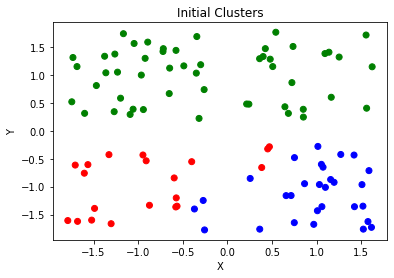
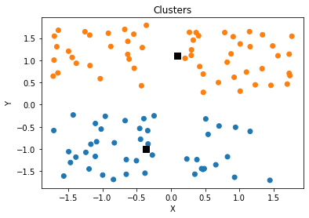
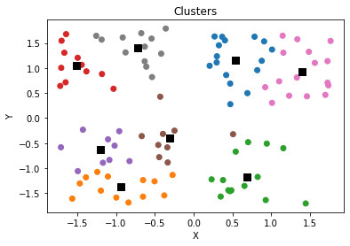
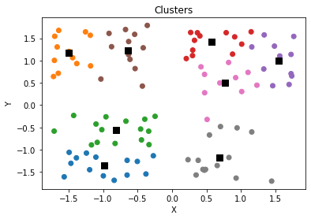

K-Means Clustering From Scratch
Introduction
Imagine we have a scattering of points whose labels or group assignments are completely unknown to us and moreover, we haven’t a clue as to the number of groups. Unsupervised clustering helps us in such a situation and allows us to assign a cluster to each point. These clusters are defined by their centroids (centers). The K-Means algorithm will iteratively update these centroids to find the best location for them. It turns out that this clustering problem that K-Means helps solve is a computationally difficult problem (NP-Hard) but nevertheless we will go through the steps in detail here.
It may help understand this algorithm if we were to create the K-Means algorithm completely from scratch to get a deeper understanding of what is happening. This article includes:
- Simulate data
- Create functions used by K-Means
- Perform K-Means with specified number of clusters
- Define a score value, perform K-Means with different number of clusters, and choosing the best value for this hyperparameter
- Performing K-Means with the Scikit-Learn library
- Compare performance between our implementation and the Scikit-Learn implementation
1. Simulate Data
- Let’s begin with simply simulating some points that we will then use to cluster
import random
import numpy as np
import matplotlib.pyplot as plt
n = 100
points = [[random.choice([-1, 1]) + random.uniform(-0.8, 0.8) for _ in range(2)] for _ in range(n)]
[p.append(0) for p in points]
npoints = np.array(points)
plt.scatter(npoints[:,0], npoints[:,1], marker='o', c='r')
plt.title('Scatter Plot of Points')
plt.xlabel('X')
plt.ylabel('Y')
plt.show()

2. Define Functions For K-Means
Initialize Clusters
- Have k-means algorithm ‘find’ the clusters
- Begin by randomly choosing initial cluster values
- As we know with k-means, k should be chosen in the beginning. Say we didn’t know there were four clusters in reality so we start with $k = 3$
- To choose initial clusters, let’s take a sample of our data, calculate the means of our $X$ and $Y$ values and assign this to a cluster
- Let’s say we take a small number of samples just to get rough starting clustering
def initialize_clusters(points, k):
clusters = [0 for _ in range(k)]
for i in range(len(clusters)):
idx = np.random.randint(points.shape[0], size=5)
sample = points[idx, :]
clusters[i] = np.mean(sample, axis=0)
clusters[i][-1] = i
return np.array(clusters)
k = 3
clusters = initialize_clusters(npoints, k)
Assign Points to a Cluster
- Let’s go ahead and assign each point to a cluster depending on which one it is closest to
- We will need a distance method to define ‘closeness’
- We will also need a method that allows us to compare each point to all clusters and choose the closes
def distance(a, b):
return np.sqrt((b[0] - a[0])**2 + (b[1] - a[1])**2)
def assign_labels(points, clusters):
lpoints = np.empty((0, 3))
for p in points:
cluster_dist = []
for c in clusters:
cluster_dist.append(distance(p, c))
p[2] = np.argmin(cluster_dist)
lpoints = np.vstack((lpoints, p))
return lpoints
lpoints = assign_labels(npoints, clusters)
x = lpoints[:, 0]
y = lpoints[:, 1]
l = lpoints[:, 2]
colors=['r','b','g']
plt.scatter(x, y, c = [colors[int(i)] for i in l])
plt.title('Initial Clusters')
plt.xlabel('X')
plt.ylabel('Y')
plt.show()

Update Clusters
- Now that we have initial clusters, we can recalculate the clusters
def calculate_clusters(points):
cluster_label = list(set(points[:,2]))
clusters = []
for c in cluster_label:
mask = points[:, 2] == c
clusters.append(np.mean(points[mask, :], axis=0))
return np.array(clusters)
calculate_clusters(npoints)
array([[-0.90555932, -0.95877451, 0. ],
[ 0.94987571, -1.12258394, 1. ],
[-0.24173413, 1.00161447, 2. ]])
- These are the functions needed to perform K-Means. All we have left to do is iteratively apply these functions to obtain optimal values for our clusters.
3. Perform K-Means with $k = 3$
- Generate new data and assign all points to the same group
n = 100
points = [[random.choice([-1, 1]) + random.uniform(-0.8, 0.8) for _ in range(2)] for _ in range(n)]
[p.append(0) for p in points]
npoints = np.array(points)
k = 3
iterations = 30
clusters = initialize_clusters(npoints, k)
for _ in range(iterations):
# Assign points to clusters
npoints = assign_labels(npoints, clusters)
# Update cluster
clusters = calculate_clusters(npoints)
x = npoints[:, 0]
y = npoints[:, 1]
l = npoints[:, 2]
colors=['r','b','g', 'k', 'y']
plt.scatter(x, y, c = [colors[int(i)] for i in l])
plt.scatter(clusters[:,0],clusters[:,1],s=70,marker='s',c='k')
plt.title('Clusters')
plt.xlabel('X')
plt.ylabel('Y')
plt.show()

4. Finding Best Value For $k$
- We can calculate the sum of squared distances between all points and their respective clusters
def calculate_score(points, clusters):
dist_list = []
for p in points:
dist_list.append(distance(p, clusters[int(p[2])])**2)
return sum(dist_list)
calculate_score(npoints, clusters)
63.98898775077078
Iterate through and find best $k$ value by plotting Elbow
iterations = 50
scores = []
colors=['C' + str(i) for i in range(10)]
for k in range(1, 10):
clusters = initialize_clusters(npoints, k)
for _ in range(iterations):
# Assign points to clusters
npoints = assign_labels(npoints, clusters)
# Update cluster
clusters = calculate_clusters(npoints)
scores.append([k, calculate_score(npoints, clusters)])
x = npoints[:, 0]
y = npoints[:, 1]
l = npoints[:, 2]
plt.scatter(x, y, c = [colors[int(i)] for i in l])
plt.scatter(clusters[:,0],clusters[:,1],s=70,marker='s',c='k')
plt.title('Clusters')
plt.xlabel('X')
plt.ylabel('Y')
plt.show()






plt.plot([s[0] for s in scores], [s[1] for s in scores], 'ro-')
plt.title('Elbow Plot')
plt.xlabel('k (Number of Clusters)')
plt.ylabel('Sum of Within Sum of Squared Errors')
plt.show()

Found Optimal Hyperparameter, $k$
- We find that 4 is the optimal number of clusters which was the number of clusters used to simulate the original data (with noise).
5. Using ScikitLearn Library
- Although we show how KMeans may be implemented ourselves with a few simple ideas, we can take advantage of libraries as well such as ScikitLearn. In fact, it only takes one line!
from sklearn.cluster import KMeans
y_pred = KMeans(n_clusters=4, random_state=0).fit(npoints[:, :2])
x = npoints[:, 0]
y = npoints[:, 1]
l = y_pred.labels_
plt.scatter(x, y, c = [colors[int(i)] for i in l])
plt.scatter(y_pred.cluster_centers_[:,0], y_pred.cluster_centers_[:,1],s=70,marker='s',c='k')
plt.title('Clusters')
plt.xlabel('X')
plt.ylabel('Y')
plt.show()

y_pred.inertia_
39.46338949369036
6. Comparing Performance
- When compared to the scores we obtained from scrach (when $k = 4$), the scores are VERY similar! Just compare the “inertia” above with the score for $k = 4$ below.
scores
[[1, 236.5967940882629],
[2, 121.32804203454275],
[3, 63.98898775077078],
[4, 39.46338949369035],
[5, 35.048952764699855],
[6, 33.172015160724094],
[7, 28.18150296713385],
[8, 21.647161881862452],
[9, 21.134201520090667]]
Conclusion
Pros
- Relatively simple to implement.
- Scales to large data sets.
- Guarantees convergence.
- Can warm-start the positions of centroids.
- Easily adapts to new examples.
- Generalizes to clusters of different shapes and sizes, such as elliptical clusters.
Cons
- Must choose $k$ manually
- Quite dependent on initial centroids
- Clustering data of different sizes and densities
- Clusters could be ‘dragged’ by outliers (they may even get their own cluster)
- Scales poorly with high number of dimensions (consider projecting data points into lower dimensional space using PCA)